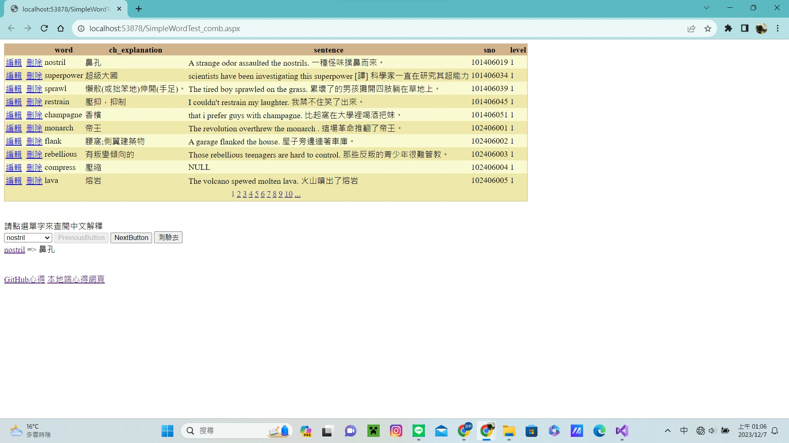
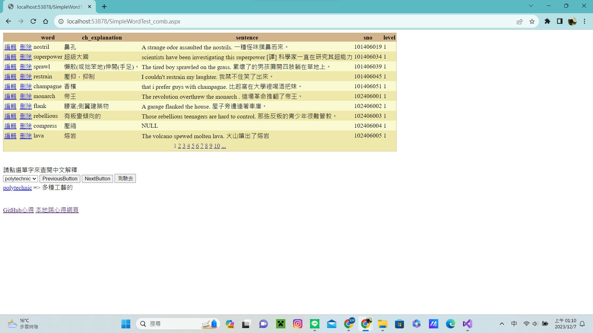
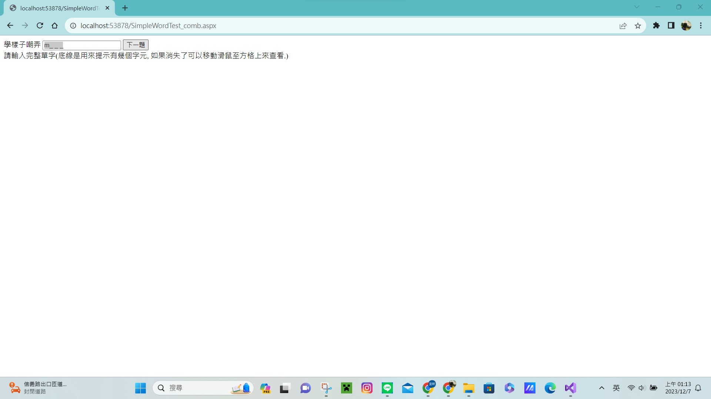
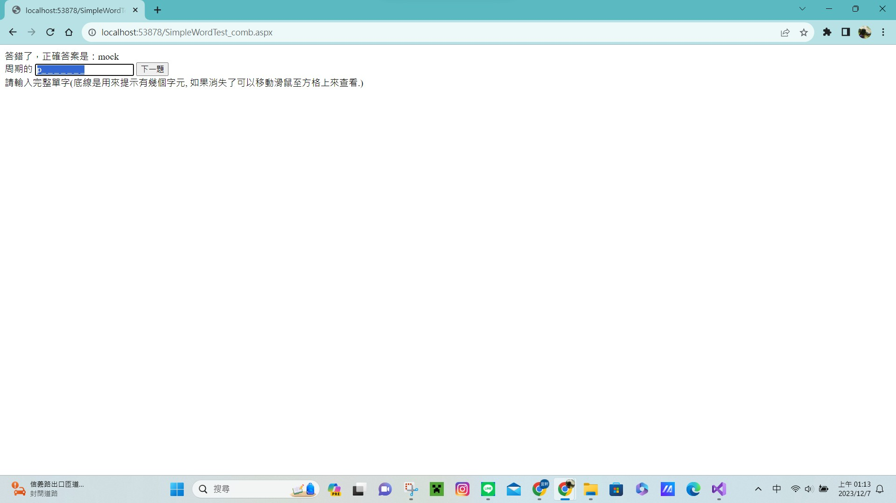
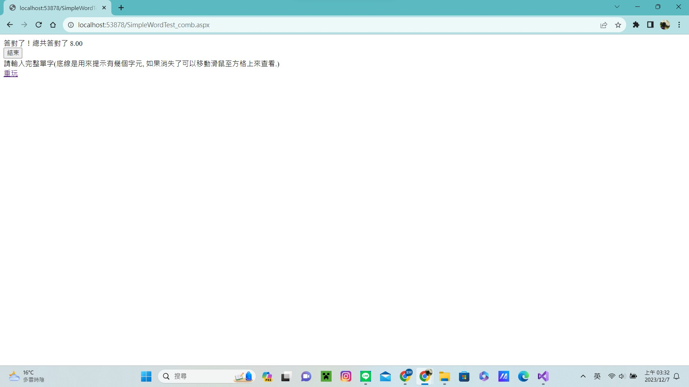

GEPT Words 單字測驗 ASP.NET 程式開發心得
作者：CBF110031 陳宜軒
開發思路與解決方案
在這裡，你可以描述你在開發過程中的思考過程，以及你如何解決問題的。
開發過程
先看了老師提供的範例程式後才開始進行。
解決策略
遇到不會的先跳過，不然就是先問ChatGPT，在自己慢慢研究怎麼修改。
使用的技術與引用來源
在這裡，你可以列出你在開發過程中使用到的技術，以及你參考的資料來源。
使用的技術
在遇到問題的時候會詢問ChatGPT或上網查資料。
引用的資源
ChatGPT
洗牌演算法
遇到的問題與解決方法
在這裡，你可以分享你在開發過程中遇到的問題，以及你是如何解決這些問題的。
遇到的問題
DropDownList不能分成10個單字一頁、按鈕無法正常關閉、題目雖然是亂數但是會重複、答錯題時不能顯示正確的單字、結束時無法統計正確的題數及顯示結束按鈕跟重完連結、按下結束按鈕沒辦法結束程式。
解決的方法
先把自己打的程式碼問ChatGPT，看他建議可以修改哪部分的程式，在自己測試看看能不能跑出來。
修改後的程式內容
在這裡，你可以分享你修改後的程式碼，並解釋你做了哪些改變。
修改的部分
程式碼說明
程式執行畫面
在這裡，你可以分享你的程式執行畫面，並解釋每個畫面的功能。
功能介紹
1.第一張圖是起始的畫面，因為DropDownList是在第一頁所以PreviousButton無法使用，下方也會顯示第一個單字的連結及中文。
2.第二張圖是按下NextButton可以跳到下一頁，PreviousButton就可以使用。
3.第三張圖是按下測驗去的按鈕顯示出的頁面。
4.第四張圖是如果答錯時會顯示正確英文單字。
5.第五張圖是最後答完題的執行畫面，會出現結束按鈕跟重玩的連結。
畫面展示





個人心得與反思
在這裡，你可以分享你對於這次開發經驗的感想，以及你從中學到了什麼。
學習心得
這次的開發經驗讓我覺得自己對於寫程式還不是很熟練，無法應用老師在課堂上所教學的內容，而且很多不理解的地方上網查資料也查不到，遇到卡住的部分就會無從下手。
雖然學到了很多東西，但沒辦法確定自己有沒有吸收進去，還需要多練習。
未來展望
未來可能不太會再碰程式，因為自己不太擅長。